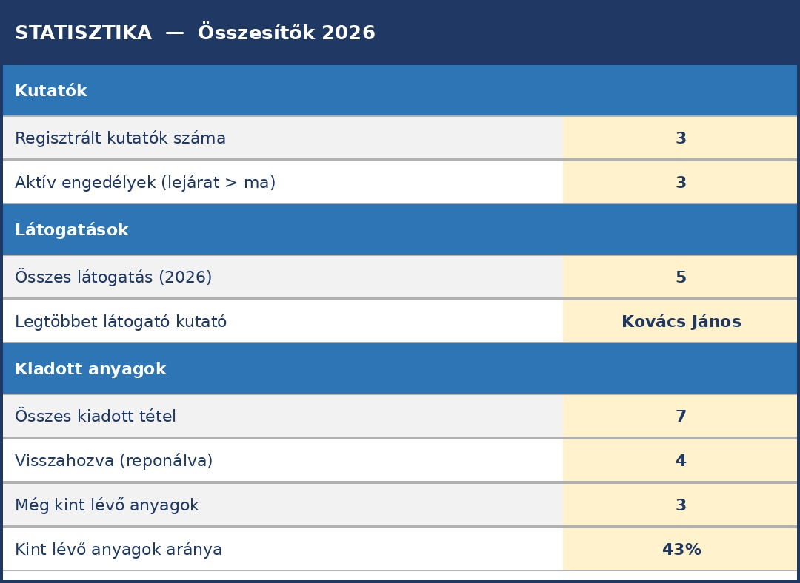

7 Összetett példa: Kutatószolgálati nyilvántartás
Az előző fejezetben egyetlen munkalappal dolgoztunk. Most egy valódi levéltári problémát oldunk meg: a kutatószolgálat teljes nyilvántartását Excelben, több egymásra hivatkozó munkalappal.
A kiindulópontot az Evangélikus Országos Levéltár papíralapú nyilvántartási rendszere adja, amely három dokumentumból áll:
- Kutatói nyilvántartó lap – a kutató személyes adatai
- Kutatónapló – minden belépés rögzítése
- Kutatott anyagok jegyzéke – kiadott és visszavett iratok
Ezeket fogjuk digitalizálni és összekapcsolni.
Letölthető fájlok ehhez a fejezethez
A fejezet során elkészített munkafüzet két változatban érhető el:
- Kutatoszolgalat_2026_v2.xlsx – kész, kitöltött munkafüzet (minden képlettel)
- Kutatoszolgalat_gyakorlo.xlsx – gyakorló sablon: az adatok benne vannak, a sárga képlet-cellák üresek – ezeket a fejezet lépései alapján kell kitölteni
7.1 A tervezés: Mit tároljunk és hogyan?
Mielőtt egyetlen cellát is kitöltenénk, tervezzük meg a struktúrát.
7.1.1 Az entitások azonosítása
Kérdezzük meg: mi az, amiről adatot tárolunk?
- Kutató – személyes adatok, engedély
- Látogatás – mikor jött, ki engedte be
- Kérés – melyik anyagot kérte, visszahozta-e
Mindhárom entitásnak saját munkalapot adunk.
7.1.2 A kapcsolatok
Kutatók ──1:N── Látogatások ──1:N── Kérések- Egy kutató több alkalommal is jöhet → 1:N kapcsolat
- Egy látogatáson több anyagot is kérhet → 1:N kapcsolat
7.1.3 A munkafüzet felépítése
| Munkalap | Tartalom | Lapfül színe |
|---|---|---|
Kutatók |
Személyes adatok, engedélyek | Sötétkék |
Látogatások |
Kutatónapló, belépések | Kék |
Kérések |
Kiadott anyagok, visszavétel | Zöld |
Statisztika |
Automatikus összesítők | Narancs |
Referencia |
Legördülő listák forrása | Szürke (rejtett) |
Alapelv: Az adatot egyszer tároljuk – a többi lapra FKERES képlettel hivatkozunk. Ha a kutató e-mail-címe megváltozik, csak a Kutatók lapon javítjuk – a Látogatások és Kérések lapon automatikusan frissül.
7.2 1. lépés – A Referencia munkalap
Először hozzuk létre a segédlistákat, amelyekből a legördülő listák táplálkoznak.
- Kattintsunk a
+gombra az alsó lapfülsoron – új munkalap jön létre - Nevezzük el:
Referencia - Írjuk be az alábbi adatokat:
A1: Levéltárosok B1: Egységek
A2: Horváth Péter B2: doboz
A3: Szabó Erzsébet B3: csomó
A4: Kiss Márton B4: kötet
A5: Fekete Judit B5: fasciculus
A6: Varga László B6: téka- Jobb klikk a lapfülre → Lapfül színe → szürke
- Jobb klikk → Elrejtés
Miért rejtjük el? A Referencia lap technikai segédeszköz – nem adatbevitelre való. Ha látható marad, valaki véletlenül módosíthatja az értékeket, és a legördülő listák elromlanak. Az elrejtett lapot bármikor visszahozhatjuk: jobb klikk bármely lapfülre → Megjelenítés.
7.3 2. lépés – A Kutatók munkalap
Ez a törzsadat-tábla: minden kutató pontosan egyszer szerepel.
7.3.1 Fejléc kialakítása
Hozzunk létre egy új munkalapot Kutatók névvel. Írjuk be az oszlopneveket az 1. sorba:
A1: Kutató_ID
B1: Kutatószám
C1: Név
D1: Születési_név
E1: Anyja_neve
F1: Születési_hely
G1: Születési_dátum
H1: Lakcím
I1: Email
J1: Telefon
K1: Foglalkozás
L1: Munkáltató
M1: Személyi_ig_szám
N1: Kutatási_téma
O1: Engedély_lejárta
P1: Regisztráció_dátumaFormázzuk meg a fejlécsort:
- Jelöljük ki A1:P1
- Félkövér + sötétkék kitöltőszín + fehér betűszín + középre igazítás
- Kattintsunk az A2 cellára, majd: Nézet → Ablaktábla rögzítése → Ablaktábla rögzítése
7.3.2 Adattípusok beállítása
Az oszlopok típusa nem mindegy:
| Oszlop | Típus | Miért? |
|---|---|---|
Kutató_ID |
Szám | Hivatkozási alap – egyedi egész szám |
Kutatószám |
Szöveg | „K-001/2026” – kötőjel és perjel miatt |
Személyi_ig_szám |
Szöveg | Vezető nullák (pl. „001234AB”) |
Születési_dátum |
Dátum | ÉÉÉÉ.HH.NN formátum |
Engedély_lejárta |
Dátum | Szűrésnél és a statisztikánál használjuk |
7.3.3 Adatellenőrzés – Engedély lejárata
Hogy véletlenül se lehessen érvénytelen dátumot beírni:
- Jelöljük ki O2:O200
- Adatok → Adatellenőrzés
- Engedélyezés: Dátum | Adatok: nagyobb, mint | Dátum:
2020.01.01 - Hibajelzés: „Az engedély lejárata 2020 utáni dátum kell legyen!”
7.3.4 Mintaadatok bevitele
| Kutató_ID | Kutatószám | Név | … | Engedély_lejárta |
|---|---|---|---|---|
| 1 | K-001/2026 | Kovács János | … | 2026.12.31 |
| 2 | K-002/2026 | Nagy Anna | … | 2026.06.30 |
| 3 | K-003/2026 | Tóth Béla | … | 2026.09.15 |
A kész Kutatók munkalap (a legfontosabb oszlopok látszanak):

Ábra 8.1: A Kutatók munkalap – minden kutató egyszer, egy sorban
Mentés: Ctrl+S
7.4 3. lépés – A Látogatások munkalap
Ez a digitális kutatónapló – minden belépés egy sor.
7.4.1 Fejléc
A1: Látogatás_ID
B1: Kutató_ID
C1: Kutató_neve ← FKERES tölti ki!
D1: Kutatószám ← FKERES tölti ki!
E1: Dátum
F1: Kiadó_levéltáros
G1: Megjegyzés
H1: Engedély_lejárta ← FKERES tölti ki!
I1: Kért_tételek_száma ← DARABHA tölti ki!
J1: Kutató_email ← FKERES tölti ki!
K1: Kutató_intézmény ← FKERES tölti ki!A C, D, H, I, J, K oszlopok fejlécét jelöljük meg sárga kitöltőszínnel – ezek képlet-oszlopok, nem kézzel töltjük ki.
7.4.2 A FKERES képletek beállítása
Kattintsunk a C3 cellára, majd az fx gombra (függvényvarázsló). Keressük meg az FKERES függvényt és töltsük ki a négy mezőt:
Kutató neve (C3):
=HAHIBA(FKERES(B3;Kutatók!$A:$C;3;0);"– nincs találat –")| Mező | Érték | Magyarázat |
|---|---|---|
| Keresési_érték | B3 |
A Kutató_ID, amit keresünk |
| Tábla_tömb | Kutatók!$A:$C |
A Kutatók lap A–C oszlopai |
| Oszlop_index | 3 |
A 3. oszlop = C = Név |
| Tartomány_keresés | 0 |
Pontos egyezés |
Kutatószám (D3):
=HAHIBA(FKERES(B3;Kutatók!$A:$B;2;0);"")Engedély lejárta (H3):
=HAHIBA(FKERES(B3;Kutatók!$A:$O;15;0);"")Kért tételek száma (I3) – hány anyagot kért ezen a látogatáson (a Kérések lapból):
=DARABHA(Kérések!$B:$B;A3)Kutató e-mail (J3):
=HAHIBA(FKERES(B3;Kutatók!$A:$I;9;0);"")Kutató intézménye (K3):
=HAHIBA(FKERES(B3;Kutatók!$A:$L;12;0);"")A képleteket másoljuk le az összes adatsorra (fogjuk meg a C3 cella jobb alsó sarkát és húzzuk le).
A HAHIBA függvény szerepe:
=HAHIBA(képlet; ha_hiba_akkor_ez)Ha a FKERES nem talál egyező Kutató_ID-t (pl. elgépelték), ne jelenjen meg #HIÁNYZIK hibaüzenet, hanem egy értelmes szöveg vagy üres cella. A HAHIBA mindig FKERES köré kerül.
7.4.3 Legördülő lista – Kiadó levéltáros
- Jelöljük ki F3:F200
- Adatok → Adatellenőrzés
- Engedélyezés: Lista
- Forrás:
=Referencia!$A$2:$A$6 - OK
Most csak a listában szereplő levéltárosok nevét lehet beírni – elgépelés és névalak-eltérés kizárva.
7.4.4 Mintaadatok
| Látogatás_ID | Kutató_ID | Kutató_neve* | Dátum | Kiadó |
|---|---|---|---|---|
| 101 | 1 | Kovács János | 2026.02.10 | Horváth Péter |
| 102 | 2 | Nagy Anna | 2026.02.10 | Szabó Erzsébet |
| 103 | 1 | Kovács János | 2026.02.17 | Horváth Péter |
| 104 | 3 | Tóth Béla | 2026.02.18 | Kiss Márton |
| 105 | 2 | Nagy Anna | 2026.03.03 | Szabó Erzsébet |
* A dőlt értékek FKERES-sel töltődnek – nem kell kézzel beírni.
A sárga oszlopok képletekkel töltődnek ki automatikusan:

Ábra 8.2: A Látogatások munkalap – a sárga oszlopok FKERES képletekkel töltődnek
Mentés: Ctrl+S
7.5 4. lépés – A Kérések munkalap
Ez a kutatott anyagok jegyzéke – minden kiadott doboz/csomó/kötet egy sor.
7.5.1 Fejléc
A1: Kérés_ID
B1: Látogatás_ID
C1: Kutató_neve ← FKERES (Látogatások lapból)
D1: Dátum ← FKERES (Látogatások lapból)
E1: Jelzet_fond
F1: Jelzet_állag
G1: Mennyiség
H1: Egység
I1: Visszavéve
J1: Reponálva
K1: Reponáló_levéltáros
L1: Kutató_ID ← FKERES (Látogatások lapból)
M1: Kutatószám ← beágyazott FKERES
N1: Kutatási_téma ← beágyazott FKERES7.5.2 FKERES képletek
Kutató neve (C3) – a Látogatások lapból:
=HAHIBA(FKERES(B3;Látogatások!$A:$C;3;0);"")Látogatás dátuma (D3) – a Látogatások lapból:
=HAHIBA(FKERES(B3;Látogatások!$A:$E;5;0);"")Kutató_ID visszakeresve (L3):
=HAHIBA(FKERES(B3;Látogatások!$A:$B;2;0);"")Kutatószám (M3) – beágyazott FKERES: először a Látogatások lapból kérjük le a Kutató_ID-t, majd azzal keresünk a Kutatók lapon:
=HAHIBA(FKERES(FKERES(B3;Látogatások!$A:$B;2;0);Kutatók!$A:$B;2;0);"")Kutatási téma (N3) – szintén beágyazott FKERES:
=HAHIBA(FKERES(FKERES(B3;Látogatások!$A:$B;2;0);Kutatók!$A:$N;14;0);"")Kétlépéses hivatkozás: A Kérések lap a Látogatások lapból kérdezi le a kutató nevét – a Látogatások lap pedig a Kutatók lapból. Ez a láncolat pontosan a relációs modellt tükrözi: minden adat egyszer tárolódik, a többi tábla csak hivatkozik rá.
7.5.3 Legördülő listák
Egység (H3:H200):
- Jelöljük ki H3:H200
- Adatok → Adatellenőrzés → Lista → Forrás:
=Referencia!$B$2:$B$6
Reponálva (J3:J200):
Forrás: "I,N" – közvetlenül megadva, nem külön listából.
Reponáló levéltáros (K3:K200):
Forrás: =Referencia!$A$2:$A$6
7.5.4 Feltételes formázás – Mi van még kint?
Emeljük ki narancsszínnel a még vissza nem hozott anyagokat:
- Jelöljük ki A3:K200
- Kezdőlap → Feltételes formázás → Új szabály
- „Képlettel meghatározott cellák formázása”
- Képlet:
=$J3="N" - Formátum: narancs kitöltőszín → OK
Most minden sor, ahol a Reponálva = „N”, narancsszínnel jelenik meg – azonnal látjuk, mi van még kint.

Ábra 8.3: A Kérések munkalap – zöld: visszahozva, narancs: még kint van
Mentés: Ctrl+S
7.6 5. lépés – A Statisztika munkalap
Ez a vezérlőpult – automatikusan frissülő összesítők, amelyeket nem kell kézzel számolni.
7.6.1 Felépítés
Hozzunk létre egy Statisztika nevű munkalapot, és írjuk be az alábbi képleteket:
7.6.1.1 Kutatók
| Cella | Felirat | Képlet |
|---|---|---|
| B3 | Regisztrált kutatók száma | =DARAB2(Kutatók!A3:A1000) |
| B4 | Aktív engedélyek (lejárat > ma) | =DARABHA(Kutatók!O3:O1000;">"&MA()) |
7.6.1.2 Látogatások
| Cella | Felirat | Képlet |
|---|---|---|
| B7 | Összes látogatás | =DARAB2(Látogatások!A3:A1000) |
| B8 | Legtöbbet látogató kutató | ld. lent |
7.6.1.3 Kiadott anyagok
| Cella | Felirat | Képlet |
|---|---|---|
| B11 | Összes kiadott tétel | =DARAB2(Kérések!A3:A1000) |
| B12 | Visszahozva (reponálva) | =DARABHA(Kérések!J3:J1000;"I") |
| B13 | Még kint lévő anyagok | =DARABHA(Kérések!J3:J1000;"N") |
| B14 | Kint lévő anyagok aránya | =HAHIBA(B13/B11;0) – százalék formátum |
Függvénynév-eltérések: A feltételes számlálás függvényének neve verziónként eltérhet.
| Verzió | Függvénynév |
|---|---|
| Magyar Excel (régebbi) | DARABTELI |
| Magyar Excel 365 | DARABHA |
| Angol Excel | COUNTIF |
Ha az egyik nevet nem fogadja el az Excel, próbáljuk meg a másikat.
7.6.2 A MA() függvény
Az aktív engedélyek számításában a MA() függvény a mai dátumot adja vissza – ezért ez az összesítő minden nap automatikusan frissül, nem kell kézzel módosítani.
=DARABHA(Kutatók!O3:O1000;">"&MA())Értelmezés: számoljuk meg azokat a sorokat a Kutatók lapon, ahol az Engedély_lejárta értéke nagyobb (azaz későbbi), mint a mai nap.
7.6.3 Az INDEX/HOL.VAN kombináció
A legtöbbet látogató kutató nevének meghatározásához összetettebb képlet kell:
=INDEX(Látogatások!C3:C1000;
HOL.VAN(
MAX(DARABHA(Látogatások!C3:C1000;Látogatások!C3:C1000));
DARABHA(Látogatások!C3:C1000;Látogatások!C3:C1000);
0
)
)Hogyan működik lépésről lépésre?
DARABHA(C3:C1000; C3:C1000)– minden névhez megszámolja, hányszor szerepel a listábanMAX(...)– megkeresi a legnagyobb számot (= legtöbb látogatás)HOL.VAN(MAX...; tömb; 0)– megkeresi, hányadik helyen van az a sor, ahol ez a maximum előfordulINDEX(C3:C1000; ...)– visszaadja az adott pozícióban lévő nevet

Ábra 8.4: A Statisztika munkalap – minden érték automatikusan frissül
Megjegyzés: Az INDEX/HOL.VAN kombináció a FKERES rugalmasabb alternatívája – balra is tud keresni, és nem törik el oszlopbeszúrásnál. Haladóbb Excel-használatban érdemes megismerni.
7.7 6. lépés – A munkafüzet rendezése
7.7.1 Lapfül-színek beállítása
Kattintsunk jobb egérgombbal minden lapfülre → Lapfül színe:
| Munkalap | Szín |
|---|---|
| Kutatók | Sötétkék |
| Látogatások | Kék |
| Kérések | Zöld |
| Statisztika | Narancs |
| Referencia | Szürke (rejtett) |
7.7.2 Lapfülek sorrendje
Ha a lapok nincsenek a megfelelő sorrendben: fogjuk meg a lapfület és húzzuk a kívánt helyre.
7.7.3 Végső ellenőrző checklist
☐ Referencia lap el van rejtve
☐ Minden képlet-oszlop sárga háttérrel jelölve
☐ Legördülő listák működnek (Kiadó, Egység, Reponálva, Reponáló)
☐ FKERES képletek nem adnak #HIÁNYZIK hibát (HAHIBA védi őket)
☐ Feltételes formázás a Kérések lapon (narancs = kint lévő)
☐ Ablaktábla rögzítve mindhárom adatlapon
☐ A Statisztika lapon az összes szám frissül, ha új adatot viszünk fel
7.8 Mit mutat ez a példa a papíros rendszerhez képest?
| Feladat | Papíron | Excelben |
|---|---|---|
| Kovács János témája megváltozott | Minden naplósorban javítani | Kutatók lapon egyszer javítjuk |
| Kik vannak ma bent? | Végiglapozzuk a naplót | Szűrés: Dátum = ma |
| Mi van még kint? | Végignézzük a kiadási listát | Szűrés: Reponálva = N (narancs sorok) |
| Hány kutató jött idén? | Megszámoljuk kézzel | =DARAB2(Látogatások!A3:A1000) |
| Lejár valakinek az engedélye? | Minden lapot megnézünk | =DARABHA(Kutatók!O:O;"<"&MA()+30) |
7.9 Összefoglalás: Melyik függvényt mikor használtuk?
| Függvény | Hol | Mit csinál itt |
|---|---|---|
| FKERES | Látogatások, Kérések | Kutató neve, kutatószám, dátum, email, intézmény behúzása azonosító alapján |
| HAHIBA | Látogatások, Kérések | Elrejti a #HIÁNYZIK hibát, ha az azonosító nincs meg |
| DARAB2 | Statisztika | Nem üres cellák megszámlálása (rekordok száma) |
| DARABHA | Statisztika, Látogatások | Feltételes számlálás (aktív engedélyek, kint lévő anyagok, kért tételek) |
| MA() | Statisztika | Mindig a mai dátumot adja – automatikus napi frissülés |
| MAX | Statisztika | Legnagyobb érték megkeresése (legtöbb látogatás) |
| INDEX / HOL.VAN | Statisztika | Legtöbbet látogató kutató nevének visszakeresése |
7.10 Ellenőrző kérdések
- Miért érdemes a legördülő listák forrását külön
Referenciamunkalapra gyűjteni? - Mit csinál a HAHIBA függvény? Miért fontos FKERES-sel együtt használni?
- Hogyan hivatkozik a
Kéréseklap aKutatóklap adataira? Hány lépéses a láncolat? - Mire jó a
MA()függvény a statisztikai összesítőkben? - Mi a különbség a DARAB2 és a DARABHA függvény között?
- Miért narancsszínű a feltételes formázásnál a
=$J3="N"képlet – és miért fontos a$a J előtt, de nem a 3 előtt? - Milyen adatot nem lehet digitalizálni ebből a rendszerből? (Gondoljunk az eredeti papírlapokra!)
- Hasonlítsuk össze: mit tudna ez a rendszer Accessben, amit Excelben nem tud?